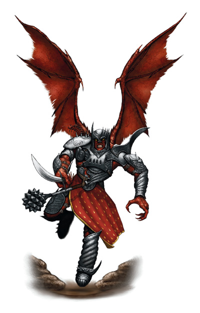

进阶职业-土灵士(Geomancer)

牧师与高阶力量接触。法师只相信古怪的卷轴。德鲁伊从自然界中获得法术。至于土灵士，他的魔法来源于上述所有。
泥土占卜术让使用者通过大地本身与各种魔法能量来源进行沟通。土灵士可以像法师一样研究，像牧师一样祈祷，或者像吟游诗人一样吟唱，但是他只能像土灵士一样施展法术。在被他称为家的地方（高山，密林，甚或深海），他会在地面上划出交织的线——一种与大地间的强力联结。他凭借这些联结所施展的法术反映出了他的意志力。但是，当土灵士晋级时，这种通过大地积蓄魔法的方式会让他付出肉体上的代价，他会变得越来越像大地与大地上的造物。
具有多种施法者职业的人物才能成为土灵士。最常见的组合是德鲁伊／术士和德鲁伊／法师。拥有奥术施法能力的牧师也可以；具有植物或动物领域的人物最有可能走上这条路。假如吟游诗人或巡林客学习了另一种更为专业的施法者职业，他们也能接受这种生活方式。
变体：假如你需要特定的组合方式，你可以通过将施法能力先决条件修改得更详细，从而定制你所需要的这个进阶职业。将你的世界风情融入这个职业是一个好方法，并且可以按照你的战役中盛行的生物创造渐变选择。
生命骰：ｄ６。
表2—11：土灵士
职业等级 基本命中 强韧 反射 豁免 特殊能力 每日法术
零级一级二级三级四级五级六级七级八级九级
１ ＋０ ＋２ ＋０ ＋２ 渐变1，法术全才0 原有施法者等级+1
２ ＋１ ＋３ ＋０ ＋３ 渐变1，地之线+1，法术全才1 原有施法者等级+1
３ ＋２ ＋３ ＋１ ＋３ 渐变2，法术全才2 原有施法者等级+1
４ ＋３ ＋４ ＋１ ＋４ 渐变2，法术全才3 原有施法者等级+1
５ ＋３ ＋４ ＋１ ＋４ 渐变3，法术全才4 原有施法者等级+1
６ ＋４ ＋５ ＋２ ＋５ 渐变3，地之线+2，法术全才5 原有施法者等级+1
７ ＋５ ＋５ ＋２ ＋５ 渐变4，法术全才6 原有施法者等级+1
８ ＋６ ＋６ ＋２ ＋６ 渐变4，法术全才7 原有施法者等级+1
９ ＋６ ＋６ ＋３ ＋６ 渐变5，法术全才8 原有施法者等级+1
１０ ＋７ ＋７ ＋３ ＋７ 渐变5，地之线+3，法术全才9 原有施法者等级+1
先决条件
想成为土灵士，人物必须满足下列要求。
技能：“知识（神秘）”６级，“知识（自然）”６级。
法术：可以施展二级奥术和二级神术。
本职技能
以下为土灵士的本职技能（括号中为技能的关键属性）：“攀爬”（力量）、“专注”（体质）、“手艺（任意）”（智力）、“交涉”（魅力）、“驯养动物” （魅力）、“医疗”（感知）、 “知识（奥术）”（智力）、“知识（地理）”（智力）、“知识（自然）”（智力）、“法术辨识”（智力）、“生存”（感知）和“游泳”（力量）。技能的具体说明请参加《玩家手册》第四章。
升级时可获得的技能点数：4＋智力调整值。
职业特性
下面列出了土灵士的职业特性。
擅长武器和防具：土灵士不获得任何新的武器和盔甲擅长。
每日法术／已知法术：在每个土灵士职业等级，人物都会获得新的每日法术（和已知法术，假如可以），就如同他的某个在获得进阶职业之前就已拥有的施法者等级增加了一级。但是，他不会得到该职业人物升级时获得的其他优势（额外的荒野变形选择，超魔专长和制造物品专长或其他类似的优势）。由于人物在成为土灵士之前拥有不止一个施法者职业，玩家必须决定在每个土灵士等级时增加哪一个施法者等级，由此决定每日法术和已知法术。
法术全才（Spell Versatility）：在第一级，土灵士学会将神术和奥术合为一体。他在获得法术和准备法术时按照单个施法者职业的正常方式进行。但是，当他施展等级等同于或低于法术全才值的任意法术时，他可以将所有职业的施法因子混合，以求得最大限度的优势。例如，某个4级土灵士在施展任何他已有的三级或更低等级的术士/法师法术时，不会有因为穿着盔甲而引起的奥术失效。（德鲁伊的禁用金属盔甲特性仍然适用于德鲁伊/土灵士，因为这是一种纯精神的誓言，而不是行动上的局限。）土灵士可以将感知调整值加到奥术的豁免DC上，也可以将魅力调整值或智力调整值加到神术的豁免DC上。假如施展某个法术既可以使用奥术材料又可以使用法器，他可以任选一种。一个具有法师、术士或吟游诗人等级的牧师/土灵士可以将任何已准备的适当等级的奥术或神术（领域法术除外）自发转化为相同等级或低等级的治疗或伤害法术，但是他必须具有牧师一样的施展该类型法术的能力。
渐变（Drift）：人物将慢慢的接近自然界。在每一个土灵士等级，从适当的阶段中选择渐变（见下文“渐变”）。
地之线（Ley Lines）：在第二级，土灵士可以创造与特定地形的魔法联结。从下面的地形中选择一个：水面，沙漠，森林，丘陵，沼泽，山地或平原。在选定区域内，土灵士所有法术的有效施法者等级+1。在第六级和第十级，人物可以选择一个新的地形以获得奖励（+1施法者等级）或将先前选择的地形上的有效施法者等级奖励再 +1。
渐变
渐变就是土灵士将逐渐转变成其他的自然外形。那些经历这种现象的人物会随着时间推移的而获得动物或植物的性质。土灵士在每一个等级都要经历渐变。作为可变规则，一生都远离文明社会的高等级德鲁伊也许会经历渐变，这由DM决定——或许每十年一次。
渐变分成不同阶段（stage）。当你第一次经历这种现象时你可以从阶段1中选择渐变。在你从先前的阶段中获得至少两个渐变之后，你才可以从更高级的阶段里选择渐变。例如，只有当你拥有至少两个阶段1渐变，两个阶段2渐变和两个阶段3渐变后才能选择阶段4的渐变。不过，只要你愿意，你可以从最大阶段之下的阶段里选择渐变。例如，你已拥有两个阶段1渐变，你可以自愿的选择第三个阶段1渐变而不是阶段2的。
阶段1渐变没有实际效果。阶段2及以后的每一个渐变都会给与人物一个永久的特异能力。天生武器的攻击允许把力量加值加到伤害骰上，除了毒素攻击和强酸攻击。下文给出的天生武器伤害数值是属于中等体型生物的。下表给出了调整后的小体型和大体型生物的伤害值。
不同体型的天生武器伤害
小体型 中体型 大体型
1d2 1d3 1d4
1d3 1d4 1d6
1d4 1d6 1d8
1d6 1d8 2d6
1d6 2d4 2d6
阶段1
豹子的花纹出现在你的身上。
你长出猫的尾巴。
你长出羽毛（但没有翅膀）。
你的眉毛变成绿色，并且十分浓密。
你的头发变成一团藤蔓。
浅色的，松软的毛出现在你的皮肤上。
你的皮肤变成绿色并且长满鳞片。
你的触摸会让花枯萎。
你的嗓音变的像狗一样，但仍然清晰可闻。
斑马的条纹出现在你的身体上。
阶段2
你的背上长出小型的驼峰。（你可以在没有水的情况下坚持五天。）
你的身上长出了一层北极熊似的白毛。（在雪地中你的隐藏技能获得+8加值。）
你的脚掌变得具有粘性，就像一只蜥蜴。（你在攀爬检定上获得+4加值。）
你变得像麋鹿一样快。（你的陆上速度增加5英尺。）
你变得像树精一样楚楚动人。（你在交涉检定上获得+4加值。）
你变得像猫一样优雅。（你在平衡检定上获得+4加值。）
你长出叶片并可以进行光合作用。（你可以用每天1小时的光照取代食物来维持生命，但是你仍然需要与以前同样多的水。）
你的血液的流动速度变得像树液一样慢。（你受到的持续性伤害的速度将减半，比如创伤或腐烂术（见第7章）。）
你变得像老鼠一样视觉敏锐。（你获得昏暗视觉能力。）
你可以像章鱼一样改变肤色。（你可以改变肤色让自己融入周围的环境中，你在隐藏检定上获得+4加值。）
阶段3
你的前额长出鹿角。（你可以进行角抵攻击，造成1d6点伤害。）
你的身体上长出刺。（你的徒手攻击造成穿刺伤害，而使用天生武器攻击你的敌人在每次成功的击中后都会受到1d3点的穿刺伤害。）
你可以像蛇一样进行紧勒。（在对体型和你相同或比你小的生物进行了一次成功的擒抱检定后，你可以造成1d3点伤害。）
你可以像蜘蛛一样织网。（你可以像《怪物图鉴》中变种蜘蛛条目里描述的那样用网诱捕猎物，但是你不能用其进行攻击。）
你长出鱼鳃。（你既可以在水中呼吸，也可以在空气中呼吸。）
你变得像鹰一样视觉敏锐。（在日光条件下你在侦察检定上获得+4加值。）
你变得像枭一样视觉敏锐。（在微光及黑暗条件下你在侦察检定上获得+4加值。）
你的手指长出猛禽般的手爪。（你获得武器娴熟专长，并且每轮可进行两次爪抓攻击，每次造成1d3点伤害。）
你的嘴将伸长，像鳄鱼一般。（你可以造成1d6点的啮咬伤害。）
你的脚趾长出雄狮般的脚爪。（如果你抓住目标，你可以进行两次耙抓攻击，每次造成1d4点伤害。）
阶段4
你像巨蚁一样长出酸刺。（你可以进行螯刺攻击，造成1d4点穿刺伤害和1d4点强酸伤害。）
你可以像狼一样进行绊摔。（如果你用天生武器进行攻击，你可以用一个自由动作尝试对目标进行绊摔；详见《怪物图鉴》第283页，狼条目。）
你可以像狼獾一样进入狂暴。（假如你受伤，你会像1级野蛮人一样狂暴——见《玩家手册》第25页，野蛮人条目——或者你已有的把狂暴作为职业特性的职业获得+1有效等级，但是只能决定狂暴效果。）
你像野猪一般凶猛。（即使在瘫痪或濒死时，你也可以继续战斗而不受惩罚。）
你可以像熊一样进行擒抱。（你获得《怪物图鉴》第310页上描述的精通擒抱能力。）
你可以像豹一样进行猛扑。（如果你在战斗开始的第一轮扑向一个敌人，你可以进行全回合攻击，即使你已经进行过移动动作。）
你的手变得有如大猩猩的手一般强壮。（你在破坏物品时力量检定获得+2加值。）
你的下颚变得有如鼬鼠的下颚一般有力。（你可以通过一次成功的啮咬攻击攀附在敌人身上，在攀附结束前每轮造成1d3点伤害。不过在攀附时你在AC上失去敏捷加值。）
你可以像乌贼一样喷出墨汁云。（在水中，每分钟一次，以一个自由动作，你可以往一个方向喷出10英尺见方的乌黑的墨汁；它会提供给你完全的隐蔽，里面的敌人也会承受完全黑暗的效果。）
你有着猎犬一般的灵敏嗅觉。（你获得30英尺距离的嗅觉灵敏能力。嗅觉灵敏能力详见《怪物图鉴》第314页。）
阶段5
你长出独角兽的角。（你在对抗毒素时强韧豁免获得+4加值，并且你可以进行角抵攻击，造成1d8点伤害。）
你的背后长出羽翼或蝠翼。（你获得60英尺的飞行速度。）
你可以像刺猬一样卷成刺球。（当你卷起来时，你的AC获得+4天生防御加值，但是你无法移动或攻击。卷曲或伸直是标准动作。）
你像皮克精一样轻灵。（你在反射豁免上获得+2加值。）
你获得蚯蚓的颤动感知。（你可以感觉到在你周围30英尺内与地面接触的任何事物。）
你的犬齿可以渗出毒素。（假如你的啮咬攻击击中了目标，它必须作一次对抗毒素的强韧检定（DC=10+1/2你的人物等级+你的体质调整值）。初始伤害为1d2点的暂时敏捷伤害；后续伤害为1d4点的暂时敏捷伤害。）
你的感官变得有如蝙蝠的感官一般敏锐。（你获得30英尺的盲视能力，详见《怪物图鉴》第306页。）
你的脚掌将变宽，像大象一般。（你获得《怪物图鉴》概论中详述的践踏能力，你的践踏攻击可以造成2d4的钝击伤害，躲避该攻击的反射豁免的DC=10+1/2你的人物等级+你的力量调整值。）
你可以像猎豹一样运动。（每小时一次，你可以用十倍于你的正常速度进行冲锋。）
你的皮肤变成树皮。（你的AC获得+1天生防御加值。）
土灵士范例
雷德拉：男性人类牧师3级/法师3级/土灵士9级；挑战级别15；中型类人生物；HD：（3d8+3）+（3d4+3）+（9d6+ 3）；HP：71；先攻权+5；速度：25英尺；AC：25，接触13，措手不及24；基本攻击：+9；擒抱：+9/；攻击：+9近战（1d3，手爪）；全回合攻击+9/+9近战（1d3，手爪）；全力攻击：＋１４／＋９近战（１ｄ８＋７，＋１长矛）或＋１０远程（１ｄ８＋７，＋１长矛）；ＳＡ：法术；ＳＱ：渐变，魔宠，魔宠能力（警觉，情感链接，法术共享），地之线+2，昏暗视觉，30英尺颤动感知，法术全才8；阵营：中立邪恶；豁免：强韧+12，反射+9，意志+17；力量10，敏捷13，体质12，智力22，感知14，魅力8。
技能和专长：专注+19，交涉+9，医疗+8，知识（神秘）+12，知识（自然）+23，知识（宗教）+12，聆听+16*，法术辨识+26，侦察+13*，生存+11；战斗施法，闪避，法术强效，精通先攻，钢铁意志，法术瞬发，抄录卷轴，专攻法术（附魔系），武器娴熟。
魔宠：雷德拉拥有一个名叫霍伯的蝙蝠魔宠。魔宠的豁免值取自身和雷德拉的较好者。该生物的能力和特性见下：
霍伯:挑战等级：—；微型动物；HD：3；HP：35；先攻权：+2；速度：5英尺，飞行40英尺（良好）；AC：18；接触16，措手不及16；基本攻击：+9；擒抱：-8；攻击—；全回合攻击—；SA：—；SQ：20英尺盲感，传递接触法术，精通反射闪避，昏暗视觉；阵营：中立邪恶；豁免：强韧+ 10，反射+7，意志+14；力量1，敏捷15，体质10，智力7，感知14，魅力4。
技能和专长：专注+18，交涉+7，医疗+8，隐藏+14，知识（神秘）+4，知识（自然）+13，知识（宗教）+4，聆听+13*，潜行+6，法术辨识+16，侦察+13*，生存+11；警觉。
*蝙蝠在侦察和聆听检定上有+4种族加值。当盲感能力无效时这些加值将失去。
盲感（Ex）：蝙蝠可以在20英尺内对生物进行精确定位。盲感无法降低或否决隐蔽。
精通反射闪避（Ex）：如果某种伤害可以通过成功的反射豁免而只受一半伤害，那么蝙蝠通过检定将不受伤害，未通过检定只受一半伤害。
渐变：雷德拉获得了九个渐变特征：头发是一团矮藤，嗓音像狗，+5英尺陆上速度，昏暗视觉，在微光及黑暗条件下侦察检定获得+4加值，猛禽般的手爪（两次攻击每次1d3点伤害），颤动感知，凶猛（即使在瘫痪或濒死时也可以继续战斗而不受惩罚），蝠翼。
魔宠能力：雷德拉因为拥有魔宠而获得特殊能力。这个生物让雷德拉在聆听检定上获得+3加值（已包括在上面的数据中）。
警觉（Ex）：*只要霍伯离主人不超过5英尺，主人就获得警觉专长。
情感链接（Su）：在1英里距离内雷德拉和他的魔宠可以进行心灵感应。主人对那些他魔宠曾经遇上的事物或去过的地点也会建立起相同的关联。
法术共享（Su）：雷德拉可以让他施放给自己的法术同样影响他的魔宠，只要魔宠在施法发生效果时处在雷德拉周围5英尺范围内。
情感链接（Su）：在1英里距离内雷德拉和他的魔宠可以进行心灵感应。主人对那些他魔宠曾经遇上的事物或去过的地点也会建立起相同的关联。
地之线+2：在森林里雷德拉的施法者等级+2。在森林里他的牧师等级为5级，法师等级为14级。
嗅觉灵敏（Ex）：雷德拉能感觉敌人在接近，察觉隐藏的敌人，并可通过嗅觉进行追踪。
法术全才8：当雷德拉释放法术时，他可以将牧师和法师的施法因子混合，使得任何法术都有可能得到最大限度的优势。假如施展某个法术既可以使用奥术材料又可以使用法器，他可以任选一种。他可以将任何已准备的至多为第二级的奥术或神术（领域法术除外）自发转化为相同等级或低等级的治疗或伤害法术。
已准备的牧师法术（4/4/3；豁免DC=16+法术等级）：零级——治疗微伤（4）；一级——治疗轻伤（3），防护善良D；二级——卜筮，熊之坚韧，侦测思想D。
D：领域法术。领域：邪恶（施展邪恶法术时+1施法者等级），知识（施展预言法术时+1施法者等级；所有知识技能为本职技能）。
施法者等级为5级（在森林外为3级）。
已准备的法师法术（4/5/5/5/4/4/3；豁免DC=16+法术等级，附魔系法术豁免DC=17+法术等级）：零级——侦测魔法（2），光亮术（2）；一级——魅惑人类，七彩喷射（2），魔法飞弹，护盾术；二级——识破隐形（2），塔莎狂笑术，蛛网术（2）；三级——火球术（2），闪电束，强效魔法飞弹，防护能量伤害；四级——困惑术（2），高等隐形术（2）；五级——支配人类，瞬发火球术（3）；六级——解离术，高等解除魔法，瞬发隐形术。
法术书：零级——全部；一级——魅惑人类，七彩喷射，易容术，脚底抹油，法师护甲，魔法飞弹，护盾术；二级——隐形术，识破隐形，塔莎狂笑术，蛛网术；三级——解除魔法，火球术，闪电束，防护能量伤害；四级——魅惑怪物，困惑术，次元锚，高等隐形术；五级——支配人类，怪物定身术，短讯术，传送术；六级 ——防魔法力场，解离术，高等解除魔法，真知术。
物品：+2秘银全身甲，天生防御+2护符，防护戒指+2，抗力斗蓬+1，智力头带+4，次级强效超魔权杖，治疗轻伤魔杖（25发），传送术卷轴，维克那的木制圣徽。
|